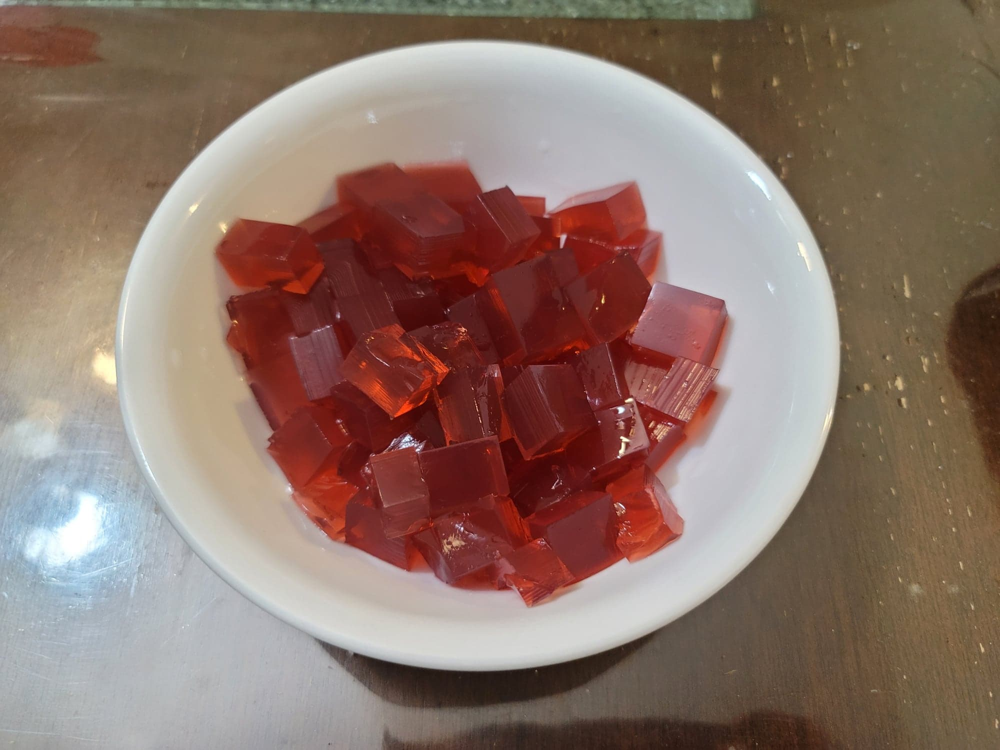

Rose Jelly

Ingredients:
- 2 cups Water
- 1/4 cup Sugar
- 2 tbsp Rose syrup
- 5 g Agar agar
- Optional: Red or Pink food coloring
Instructions:
- Combine the ingredients into a pot and bring to a boil while whisking constantly. Let simmer while whisking for about 2 minutes or until the agar agar has just about fully dissolved. If the rose syrup does not already contain food coloring, food coloring may be added for a nicer color.
- Remove from the heat and transfer to a square steel tray. Let set at room temperature or in the fridge. Cube and serve chilled.